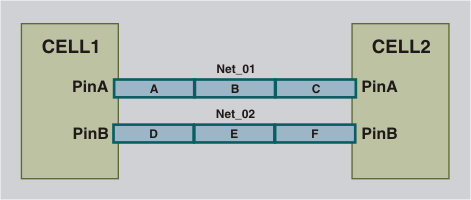

Distributed Resistance
With distributed
resistance extraction, the parasitic resistance of the net is broken
into segments representing geometric regions. Capacitance is not modeled.
Figure 1 shows a simplified layout example with the equivalent distributed resistance extraction model. For Net_01, the net sections A to C represent how Calibre xACT segments a net for distributed R extraction. This is also the case for Net_02.
Figure 1. Simplified Layout for Distributed Resistance

Figure 2 shows the extracted net model for distributed R, using the following command lines:
%calibre -xact -3d -r
%calibre -xact -fmt -r Figure 2. Distributed Resistance Extraction